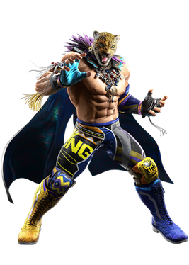
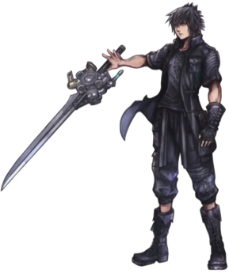
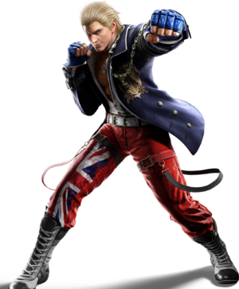

King of Iron Fist Tournament 8
I have to enter my eighth tournament in a row
by King - Feb 2, 2024
Another year another King of Iron Fist tournament. I had no plans of entering this year, but life had other plans, I seriously feel like I'm just stuck doing these things. I win a tournament, use the money to open an orphanage, and for like 7 years I just kept doing it. Why are there so many new orphans all the time? Well maybe it's because a certain Mishima keeps destroying cities and leaving children without parents. Or maybe a certain corporation owned by said Mishima is creating child soldiers. But of course, I wouldn't want to badmouth anybody... *wink wink*
So now I'm back at it for the eighth year in a row. Surely this will be my last one.
At least it seems like it'll be an easier one this year. No
Heihachi, no guys with spiked bats, no Final Fantasy
characters (I don't even know who invited that 'Noctis guy').
Like for real who is this dude

I'd say the only real threat this year is that Steve guy. You know, the the boxer? He's alwas been a pain in my side. It's like he just counters everything I throw at him. It's like he was made in a lab or something. Idk. Like I'm happy he's getting stronger and I have fun fighting him, but at the end of the day I still have money to make. I don't even know what he needs the money for. I never see this guy buy anything except for like 1 outfit every year. I think he was entering cause of his mom or something? I don't really know with this guy.
Part of me has a feeling that this might be the last tournament they're gonna do. Like I said, Heihachi is dead, his son isn't exactly doing a bang up job, and his son doesn't seem to want anything to do with the family anymore. Can't say I blame the guy. Jin once told me that Heihachi one tied him, his dad, and his grandfather to a freaking rocket. Like jeez that family needs counceling.
Also the prizing for this year isn't even just money. Whoever wins just becomes the owner of the Mishima Zaibatsu (the guys that run the tournament). And I can tell you right now that I wouldn't be running tournaments if I were the owner. So it might just end with me.
Wish me luck. It's not like I need it but it'd still be nice